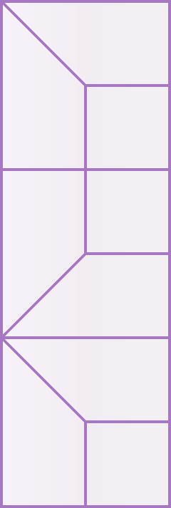

MPM-APDIインプット作成
ダークモードをONにする
設定
粒子座標からMP追加
格子情報からMP追加
境界条件追加
APDIを追加 (正方形要素)
APDIを追加 (縦長バッファー要素)
未実装
格子設定
-
計算格子幅
計算領域 辺長
粒子座標からMP追加
追加されているMP
材料番号
始点XY
終点XY
間隔
格子情報からMPを追加
追加されているMP
材料番号
格子の始点XY
格子の終点XY
格子幅
格子内MP数
左下三角
右下三角
左上三角
右上三角
境界条件の追加
追加されているMP
始点XY
終点XY
X固定
Y固定
XY固定
APDIの追加 (正方形要素)
追加されているMP
材料番号
始点XY
終点XY
要素幅
APDIを追加 (縦長バッファー要素)
追加されているMP
材料番号
始点XY
終点XY
左側要素の要素幅
右側要素の要素幅
APDIを追加 (横長バッファー要素)
追加されているMP
材料番号
始点XY
終点XY
上側要素の要素幅
下側要素の要素幅
マテリアルポイント(input_mp.dat) 内容
APDI入力ファイル(input_apdi.dat) 内容
境界条件(config.datの一部) 内容
プレビュー設定
MP円の半径 :
px
自動設定
境界線の太さ :
px
自動設定
SVG画像拡大倍率 :
%
SVGキャンパス横幅 :
px
境界条件表示の三角 :
px
ID表示 :
頂点
MP
APDI
文字サイズ :
px
自動設定
ファイルからSVGを描画
input_apdiを読み込み
input_mpを読み込み
結果データを読み込み (beta)
プロジェクトのフォルダを選択. Chrome系のブラウザでのみ動作します.
画像ファイルを保存
Vectorファイル(.svg)として保存
JPEGファイル(.jpg)として保存
PNGファイル(.png)として保存
背景を透過
ファイルを選択
描画設定
表示するデータ :
X座標データ :
Y座標データ :
格子点のデータとして描画
データの範囲 :
~
レジェンドの数値の文字列長さ :
指数(E)表示
レジェンドの位置 :
白カラーテーマを使用
現在フレームを保存
Vectorファイル(.svg)として保存
JPEGファイル(.jpg)として保存
PNGファイル(.png)として保存
背景を透過
連番ファイルを保存
再生速度(描画フレーム間隔) :
※バッファ要素について

左図のような形のAPDI要素をバッファ(Buffer)要素として用いる.
バッファ要素の左右で要素幅が倍になっている.